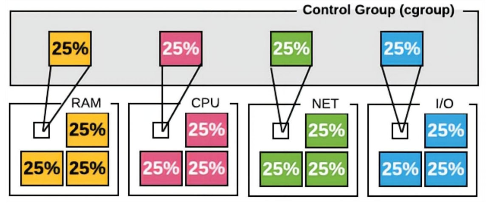
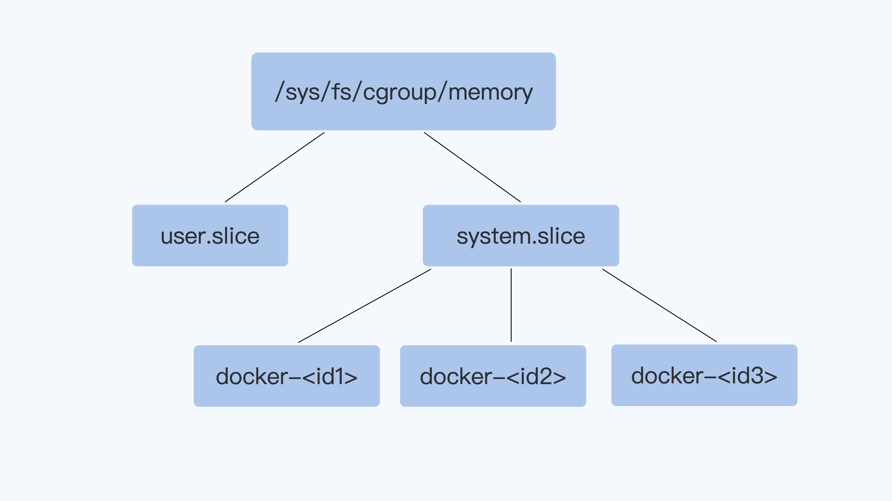

容器技术的核心原理 Namespace & cgroup
容器基于 namespace 实现资源隔离，基于 cgroup 实现资源限制。
我们知道虚拟机使用的是Hypervisor（KVM、Xen等），那么，容器是怎么实现和下层计算机硬件和操作系统交互的呢？为什么它会具有高效轻便的隔离特性呢？
其实奥秘就在于Linux操作系统内核之中，为资源隔离提供了三种技术： namespace、cgroup、chroot，虽然这三种技术的初衷并不是为了实现容器，但它们三个结合在一起就会发生奇妙的“化学反应”。
namespace是2002年从Linux 2.4.19开始出现的，和编程语言里的namespace有点类似，它可以创建出独立的文件系统、主机名、进程号、网络等资源空间，相当于给进程盖了一间小板房，这样就实现了系统全局资源和进程局部资源的隔离。
cgroup是2008年从Linux 2.6.24开始出现的，它的全称是Linux Control Group，用来实现对进程的CPU、内存等资源的优先级和配额限制，相当于给进程的小板房加了一个天花板。
chroot的历史则要比前面的namespace、cgroup要古老得多，早在1979年的UNIX V7就已经出现了，它可以更改进程的根目录，也就是限制访问文件系统，相当于给进程的小板房铺上了地砖。
Namespace
namespace 是 Linux 系统的底层概念，在内核层实现，即有一些不同类型的命名空间被部署在核内，各个docker容器运行在同一个docker主进程并且共 用同一个宿主机系统内核，各docker容器运行在宿主机的用户空间，每个容器都要有类似于虚拟机一样的相互隔离的运行空间，但是容器技术是在一个 进程内实现运行指定服务的运行环境，并且还可以保护宿主机内核不受其他进程的干扰和影响，如文件系统空间、网络空间、进程空间等，目前主要通过以下技术实现容器运行空间的相互隔离：
MNT Namespace:
-
提供磁盘挂载点和文件系统的隔离：
- 每个容器都要有独立的根文件系统有独立的用户空间，以实现在容器里面启动服务并且使 用容器的运行环境，即一个宿 主机是 ubuntu 的服务器，可以在里面启动一个 centos 运行环 境的容器并且在容器里面启动一个 Nginx 服务，此 Nginx 运行时使用的运行环境就是 centos 系统目录的运行环境，即在容器里面是不能直接访问宿主机的文件系统。
- 宿主机是使用了 chroot 技术把容器锁定到一个指定的运行目录里面并作为容器的根运行环境。
IPC Namespace：
-
提供进程间通信的隔离：
- IPC namespce 隔离进程间通信资源(同一个 IPC namespace 的进程可实现内存等资源共享，但是不同的 IPC namespace 则严格隔离)
UTS Namespace：
-
提供主机名隔离：
- UTS namespace（UNIX Timesharing System 包含了运行内核的名称、版本、底层体系结构类型等信息）用于系统标识， 其中包含了 hostname 和域名 domainname ，它使得一个容器拥有属于自己 hostname 标识，这个主机名标识独立于宿主机系统和其上的其他容器。
PID Namespace：
-
提供进程隔离：
- Linux系统中，有一个PID为1的进程(init/systemd)是其他所有进程的父进程，那么在每个容器内也要有一个父进程来管理其下属的子进程，那么多个容器的进程通 PID namespace进程隔离(比如 PID编号重复、器内的主进程生成与回收子进程等)。
Net Namespace：
-
提供网络隔离：
- 每一个容器都类似于虚拟机一 样有自己的网卡、监听端口、 TCP/IP协议栈等，docker使用 network namespace启动一 个vethX接口，这样你的容器 将拥有它自己的桥接ip地址， 通常是docker0，而docker0 实质就是Linux的虚拟网桥,网 桥是在OSI七层模型的数据链 路层的网络设备，通过mac地 址对网络进行划分，并且在不 同网络直接传递数据。
User Namespace：
-
提供用户隔离：
- 各个容器内可能会出现重名的用户和用户组名称，或重复的用户 UID 或者 GID，那么怎么隔离各个容器内的用户空间呢？
- User Namespace 允许在各个宿 主机的各个容器空间内创建相同的 用户名以及相同的用户 UID 和 GID，只是会把用户的作用范围限 制在每个容器内，即A容器和B容 器可以有相同的用户名称和ID的账 户，但是此用户的有效范围仅是当前容器内，不能访问另外一个容器 内的文件系统，即相互隔离、互不影响
Cgroups：
在一个容器，如果不对其做任何资源限制，则宿主机会允许其占用无限大的内存空间，有时候会因为代码bug程序会一直申请内存，直到把宿主机内存占完。或者一个进城可以创建成百上千个线程，可以轻易地消耗完一台计算机的所有CPU资源和内存资源。
为了避免此类的问题出现，宿主机有必要对容器进行资源分配限制，比如CPU、内存等.
Linux Cgroups 的全称是 Linux Control Groups，它最主要的作用，就是限制一个进程组能够使用的资源上限，包括CPU、内存、磁盘I/O、网络带宽等等。此外，还能够对进程进行优先级设置，以及将进程挂起和恢复等操作。
Cgroups通过不同的子系统限制了不同的资源，每个子系统限制一种资源。每个子系统限制资源的方式都是类似的，就是把相关的一组进程分配到一个控制组里，然后通过 树结构 进行管理，每个控制组都设有自己的资源控制参数。
完整的Cgroups子系统的介绍，你可以查看 Linux Programmer's Manual 中Cgroups的定义。
这里呢，我们只需要了解几种比较常用的Cgroups子系统：
- CPU子系统，用来限制一个控制组（一组进程，你可以理解为一个容器里所有的进程）可使用的最大CPU。
- memory子系统，用来限制一个控制组最大的内存使用量。
- pids子系统，用来限制一个控制组里最多可以运行多少个进程。
- cpuset子系统， 这个子系统来限制一个控制组里的进程可以在哪几个物理CPU上运行。

Cgroups 在内核层默认已经开启，从 centos 和 ubuntu 对比结果来看，内核较新的 ubuntu 支持的功能更多。
# cat /boot/config-6.8.0-51-generic | grep -i cgroup | grep -v "^#" | wc -l
23
# cat /boot/config-6.8.0-51-generic | grep MEM | grep CG | grep -v "^#"
CONFIG_MEMCG=y
CONFIG_MEMCG_KMEM=y
$ cat /proc/filesystems | grep cg
nodev cgroup
nodev cgroup2 # 如果看到 cgroup2，表示支持cgroup v2；
对于启动的每个容器，都会在Cgroups子系统下建立一个目录，在Cgroups中这个目录也被称作控制组，比如下图里的 docker-<id1> docker-<id2> 等。然后我们设置这个控制组的参数，通过这个方式，来限制这个容器的内存资源。

在每个Cgroups子系统下，对应这个容器就会有一个目录docker- c5a9ff78d9c1…… 这个容器的ID号，容器中所有的进程都会储存在这个控制组中cgroup.procs 这个参数里。
# cd /sys/fs/cgroup/system.slice/docker-dc816177c2362359891cb264c93adc32346cdb3032de9da7c5f83509e07c3c05.scope
keti@devops:/sys/fs/cgroup/system.slice/docker-dc816177c2362359891cb264c93adc32346cdb3032de9da7c5f83509e07c3c05.scope$ cat cgroup.procs
42160
42211
42212
42213
42214
42215
42216
42217
42218
$ ps -ef | grep nginx
root 42160 42140 0 10:05 ? 00:00:00 nginx: master process nginx -g daemon off;
message+ 42211 42160 0 10:05 ? 00:00:00 nginx: worker process
message+ 42212 42160 0 10:05 ? 00:00:00 nginx: worker process
message+ 42213 42160 0 10:05 ? 00:00:00 nginx: worker process
message+ 42214 42160 0 10:05 ? 00:00:00 nginx: worker process
message+ 42215 42160 0 10:05 ? 00:00:00 nginx: worker process
message+ 42216 42160 0 10:05 ? 00:00:00 nginx: worker process
message+ 42217 42160 0 10:05 ? 00:00:00 nginx: worker process
message+ 42218 42160 0 10:05 ? 00:00:00 nginx: worker process
我们实际看一下这个例子里的memory Cgroups，它可以控制Memory的使用量。比如说，我们将这个控制组Memory的最大用量设置为2GB。
具体操作是这样的，我们把（2* 1024 * 1024 * 1024 = 2147483648）这个值，写入memory Cgroup控制组中的memory.limit_in_bytes里， **这样设置后，cgroup.procs里面所有进程Memory使用量之和，最大也不会超过2GB。
启动一个 nginx 容器
# docker run -d --rm nginx
keti@devops:/sys/fs/cgroup/system.slice/docker-dc816177c2362359891cb264c93adc32346cdb3032de9da7c5f83509e07c3c05.scope$ echo 2147483648 > memory.limit_in_bytes keti@devops:/sys/fs/cgroup/system.slice/docker-dc816177c2362359891cb264c93adc32346cdb3032de9da7c5f83509e07c3c05.scope$ cat memory.limit_in_bytes 2147483648
我们通过memory Cgroups定义了容器的memory可以使用的最大值。其他的子系统稍微复杂一些，但用法也和memory类似。
这里我们还要提一下 Cgroups有v1和v2两个版本：
Cgroups v1在Linux中很早就实现了，各种子系统比较独立，每个进程在各个Cgroups子系统中独立配置，可以属于不同的group。
虽然这样比较灵活，但是也存在问题，会导致对 同一进程的资源协调比较困难（比如memory Cgroup与blkio Cgroup之间就不能协作）。虽然v1有缺陷，但是在主流的生产环境中，大部分使用的还是v1。
Cgroups v2 做了设计改进， 解决了v1的问题，使各个子系统可以协调统一地管理资源。
不过Cgroups v2在生产环境的应用还很少，因为该版本很多子系统的实现需要较新版本的Linux内核，还有无论是主流的Linux发行版本还是容器云平台，比如Kubernetes，对v2的支持也刚刚起步。
CPU Cgroup
Memory Cgroup
容器资源限制验证：
- cgroup验证：
root@docker-server1:~# cat /sys/fs/cgroup/docker/b7b3755f22962538418dc56c23c03941cd7f97178ed8e25c7d02fbc4ca9878ed/memory.max
536870912
root@docker-server1:~# cat /sys/fs/cgroup/docker/b7b3755f22962538418dc56c23c03941cd7f97178ed8e25c7d02fbc4ca9878ed/cpu.max
200000 100000
- systemd限制验证:
root@docker-server1:~# docker start b7b3755f2296
b7b3755f2296
root@docker-server1:~# ps -ef | grep nginx #过滤出目的服务的进程号
root 18770 18736 1 17:08 ? 00:00:00 nginx: master process nginx -g daemon off;
systemd+ 18816 18770 0 17:08 ? 00:00:00 nginx: worker process
root@docker-server1:~# cat /proc/18770/cpuset #查询进程的限制
/system.slice/docker-b7b3755f22962538418dc56c23c03941cd7f97178ed8e25c7d02fbc4ca9878ed.scope
root@docker-server1:~# cat /sys/fs/cgroup/system.slice/dockerb7b3755f22962538418dc56c23c03941cd7f97178ed8e25c7d02fbc4ca9878ed.scope/cpu.max #查询cpu限制范围
200000 100000
root@docker-server1:~# cat /sys/fs/cgroup/system.slice/dockerb7b3755f22962538418dc56c23c03941cd7f97178ed8e25c7d02fbc4ca9878ed.scope/memory.max #查询内存限制范围
536870912